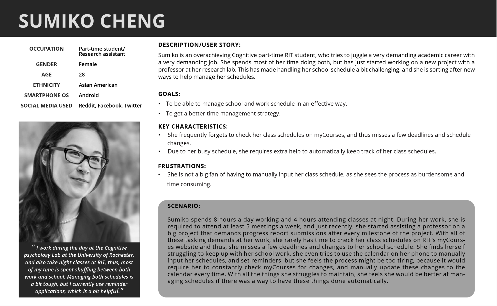
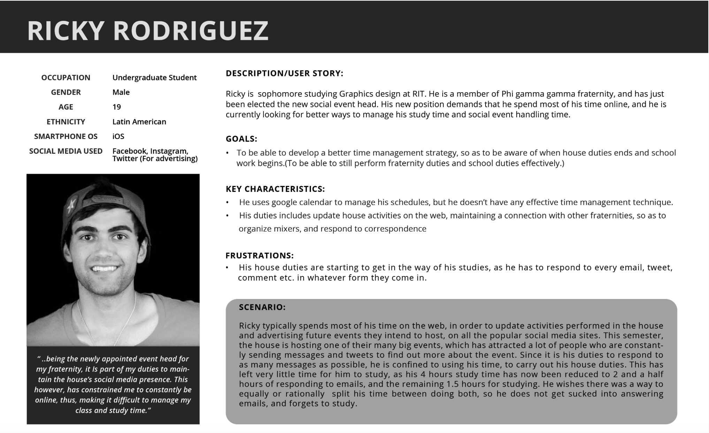
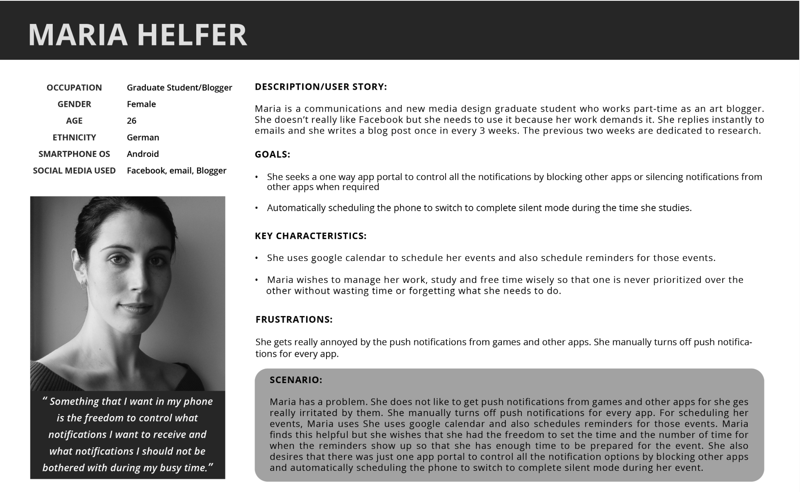
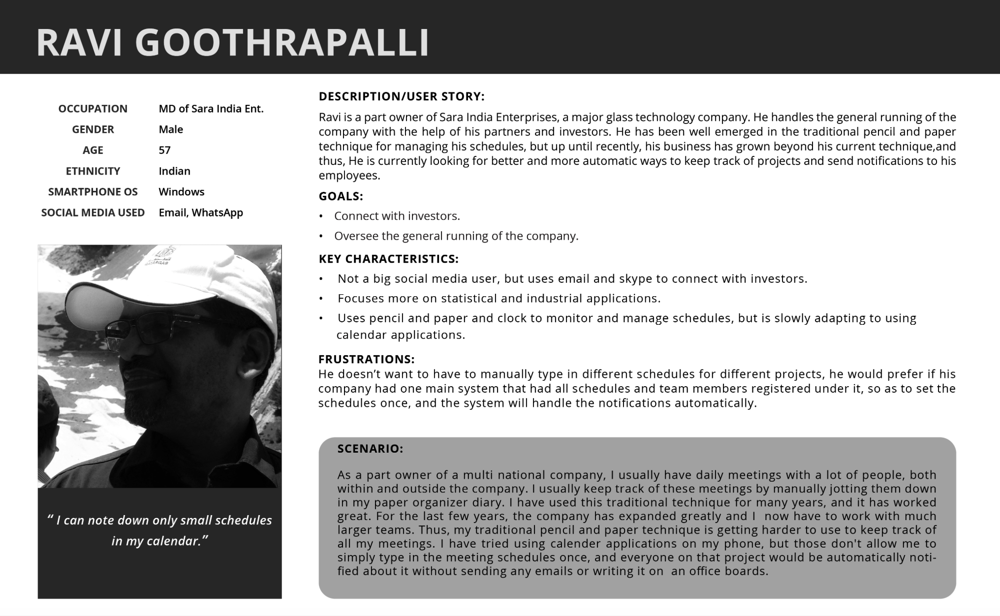
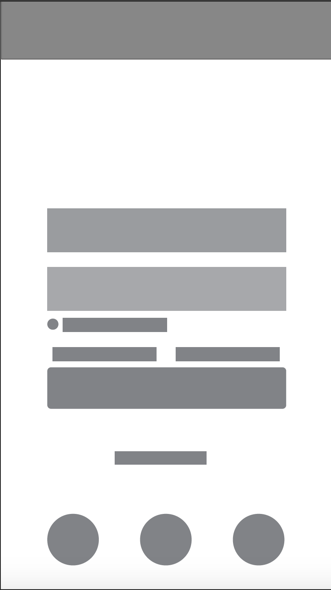
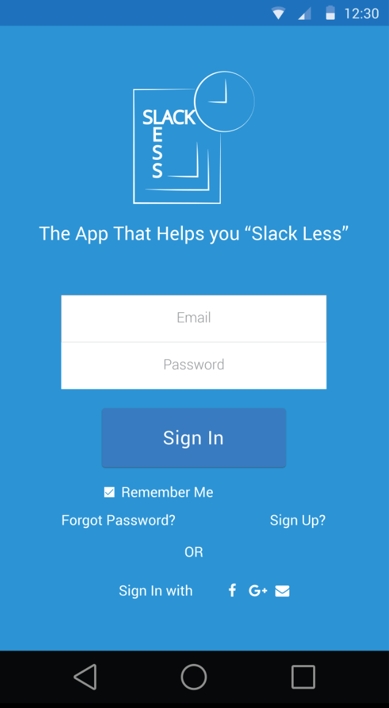
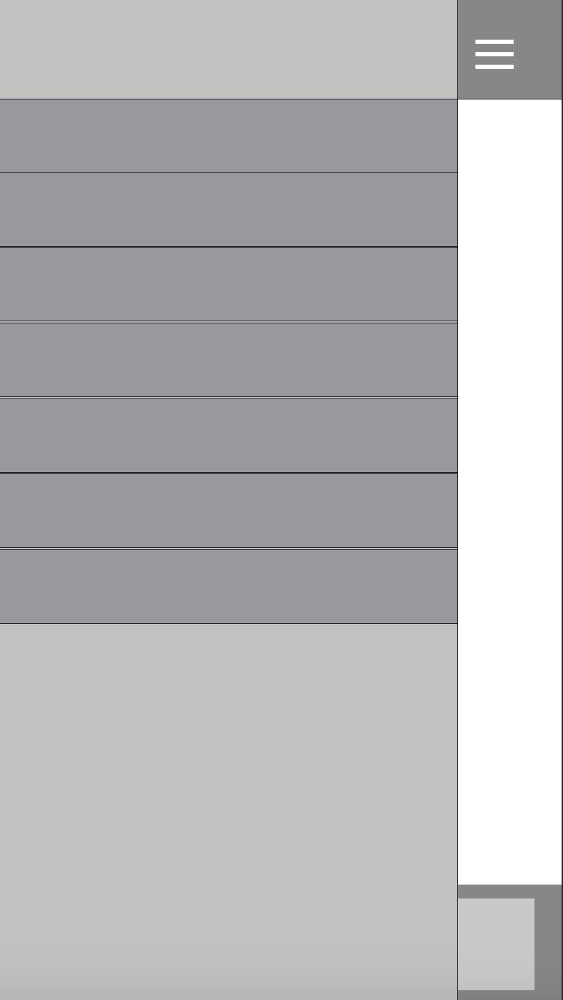
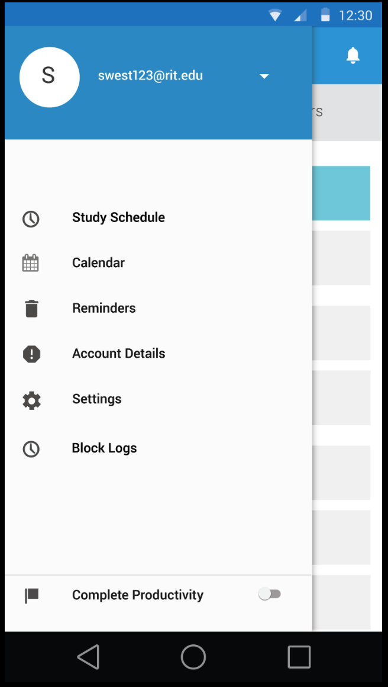
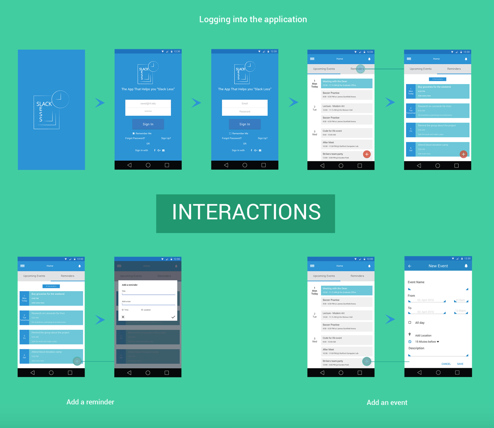
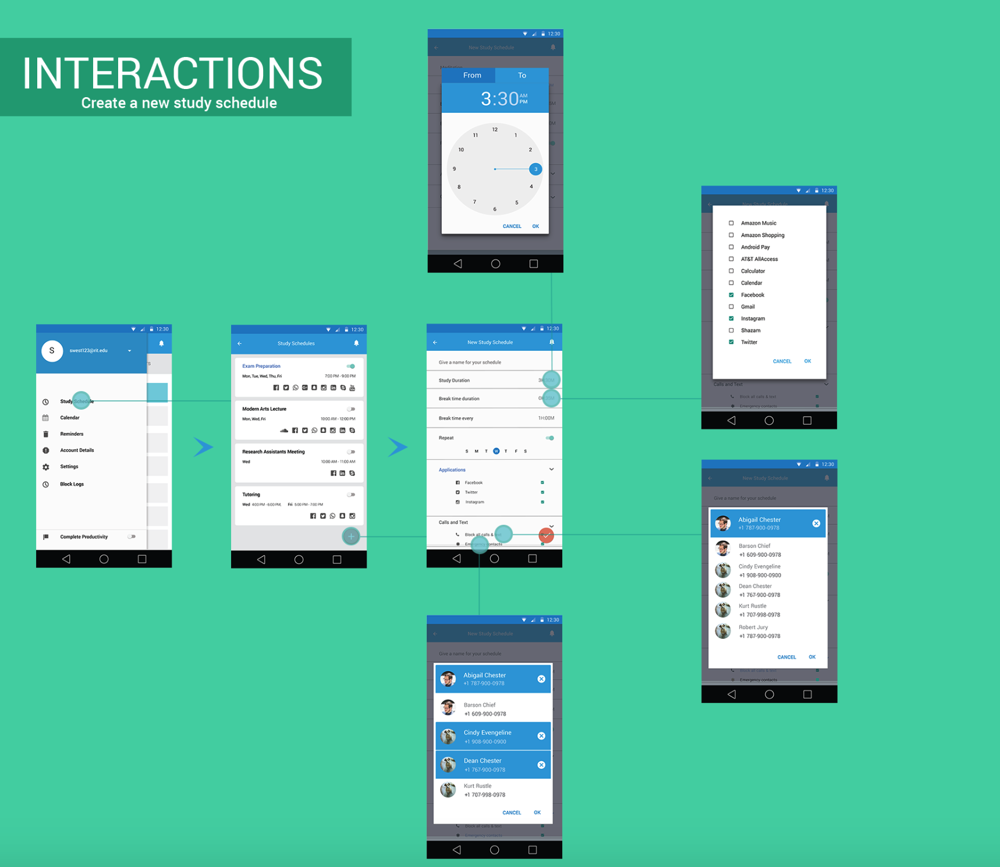

The Slackless App
Combination of a pomodoro app and online content collection on the basis of User Research
This app is designed for individuals who struggle with maintaining schedules and staying focused, particularly while studying. It offers vocabulary, grammar, and spelling checks to aid in their productivity.
- Tools Used: Illustrator | LucidCharts | inVision | Photoshop
In today's globalized world, an increasing number of individuals are continually seeking ways to remain connected with current events and with each other. Technology, particularly in the realm of mobile and networking, is perpetually advancing to provide people with access to information and resources, thereby facilitating connectivity and enhancing efficiency in their activities. Various social media platforms and applications such as Facebook, Twitter, Instagram, Snapchat, and many others have become integral parts of our daily lives, offering entertaining and innovative means of instantaneous communication and information dissemination. However, a significant concern arises as we find ourselves inundated with a myriad of notifications from messages, spam emails, phone calls, and more, which can prove to be distracting, particularly during important tasks such as studying or attending meetings. One physiological factor contributing to this distraction is the persistent temptation to check notifications or browse through social media platforms even when engaged in essential activities.
After conducting a contextual inquiry and filtering down to the most important problems, our team is focused on assisting users in overcoming distractions and automating most tasks, thereby alleviating the burden of remembering every task and providing the best user experience. The user interface will be designed to be simple, preventing confusion and cognitive overload, and it will also be intuitively easy for anyone to use from the first interaction. As a general principle, the privacy and security of our users’ information will be of utmost concern to ensure users feel at ease while using the app. The purpose of our team is to develop a prototype that highlights the application’s key features through information gathering, knowledge mining, brainstorming, cross-referencing problems and solutions, and devising convenient solutions for every possible issue.
The proposed application will be based on the popular Pomodoro time-management technique, which uses a timer to break down tasks into 25-minute intervals, separated by short breaks. The application will extend this technique by including a social media blocking feature. The application will have two modes: the "Study Mode," which will be 25 minutes long, and the "Break Mode," which will be 5 minutes long. During Study Mode, all calls, text messages, social media apps, and websites will be temporarily blocked. All notifications will be stored in the app's memory, and users will be given an option to select contacts from their contact list that would be allowed to contact them during the study time. If a particular phone number that wasn’t selected tries to contact the user repeatedly (ideally more than 3 times), the app would flag the number as an emergency and allow the call to go through. During the Break Mode, all functionalities will be restored, and the user will be notified about any stored notifications. After the 5-minute break, the app would switch back to the study mode and continue with the cycle. After four study modes, the break time will be increased to 15-20 minutes to give users more time to rest. Additionally, users would be able to customize their own study time and break time, with the only restriction being that the break time has to be at most half of the study time. Users will also have the option of pre-setting the days and times they want the app to automatically go into study mode.
Conducted interviews of various participants from different age groups, people going to college and Corporate professionals.
Contextual enquiry - Affinity diagram.
Building personas and user profiles.
- 
- 
- 
- 
making wireframes using paper and pencil.

A few changes were made to the demo screens during the process.
- 
- 
- 
- 
Work flow to login in, add reminders and add events, to create a study time schedule.
- 
- 
This demo is done in inVision.
Each team member will be responsible for gathering information required not only to maintain security but also to gather the necessary information about our users. These data will be used to tackle major problems that will arise over time in the project development process. To ensure successful completion of the project, each task will be divided among the team members, and all members will be required to complete their individual tasks before the deadline set by the team. The insights acquired by each team member will be exchanged among fellow team members so that everyone is on the same page. These are the set of agreements that we have all committed to.
Primarily targeting middle school to college-level students with access to cell phones, social media, or computers, our app aims to address the susceptibility to social media effects and difficulties in managing schedules and deadlines commonly faced by this demographic. However, the utility of our app extends beyond students to encompass business owners, employees, and anyone seeking to minimize distractions and enhance focus on tasks. Through continuous research, user observation, and survey feedback collection, we seek to gain a comprehensive understanding of the challenges associated with social media distractions and scheduling. This knowledge will inform the iterative design process, ensuring that our app meets user needs effectively. Following the development of a functional prototype based on gathered insights, we will conduct task walk-throughs at various design stages. Initially, we will assess the intuitive user interface design, followed by evaluating functionality. By observing user interactions at each stage, we aim to obtain firsthand insights into their responses and preferences, facilitating iterative improvements. To enable seamless synchronization of class schedules, we will collaborate with educational institutions that host course scheduling platforms, such as RIT’s myCourses. This partnership will ensure the provision of necessary security clearances, upon students' requests, for integrating their class schedules with our application.
My Team
Valerie Opko
Group Partner | HCI